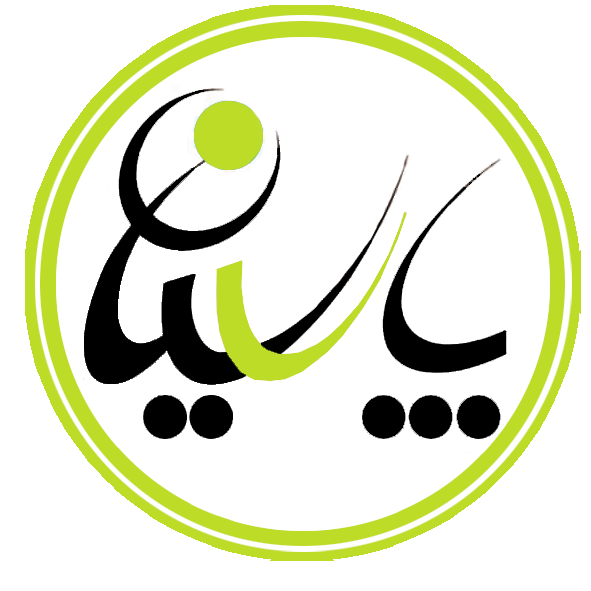

پارسیان
ویراستار هوشمند فارسی — نسخهٔ ۱٫۰
🔍 ویراستاری متن
✅ اصلاح خودکار همه
⚙️
اصلاح املای واژهها
اصلاح فاصلهگذاری و نقطهگذاری
تشخیص واژههای با پسوند و نیمفاصله
آماده است

برای شروع، روی «ویراستاری متن» بزنید.
متن سند شما بررسی و غلطها پیشنهاد اصلاح میشوند.